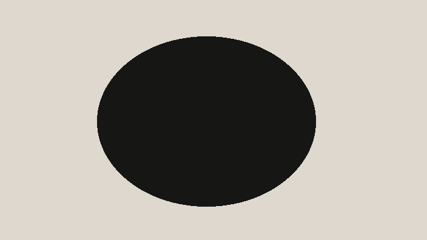
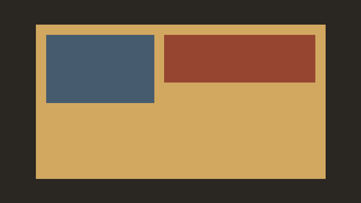
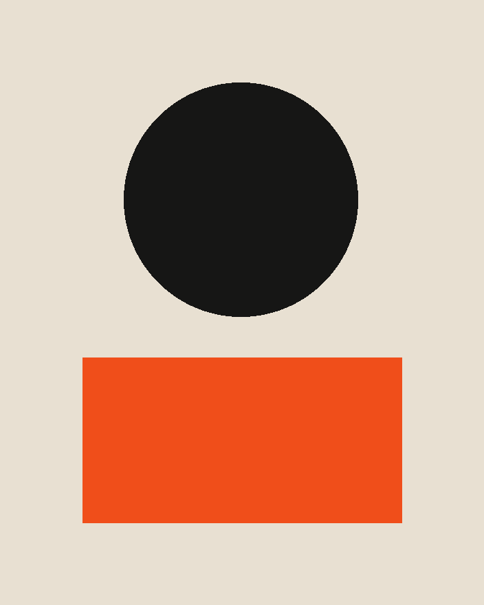

Stat
Flyd kept 12% of sessions after the launch.
WWikipedia · 2 OctAsk · Open · Save
More · Less

GIF
Hover plays the loop. This is one frame of it.
CWikimedia CommonsAsk · Open · Save
More · Less

Video
Poster frame. The chat uses a transcript, or says there isn't one.
AInternet ArchiveAsk · Open · Save
More · Less

Image
The picture is the item.
CWikimedia CommonsAsk · Open · Save
More · Less
Quote
Kept as the words, not a link to a writeup.
QWikiquoteAsk · Open · Save
More · Less
Thread
Thread about a small host.
HHacker NewsAsk · Open · Save
More · Less
Worth a look
The article seat, after the other media have theirs.
SStudio · 26 OctAsk · Open · Save
More · Less